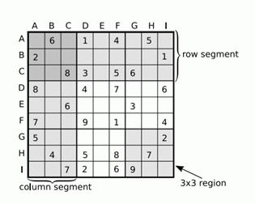

第一行T为测试组数，对于每组数据会先输出9*9的Sudoku Puzzle，再输出9*9的Unsolved Puzzle，每组测试数据之间有一空行。

2
963174258
178325649
254689731
821437596
496852317
735961824
589713462
317246985
642598173
060104050
200000001
008305600
800407006
006000300
700901004
500000002
040508070
007206900
534678912
672195348
198342567
859761423
426853791
713924856
961537284
287419635
345286179
010900605
025060070
870000902
702050043
000204000
490010508
107000056
040080210
208001090
Yes
No
【数据规模】
100%：T<=5.